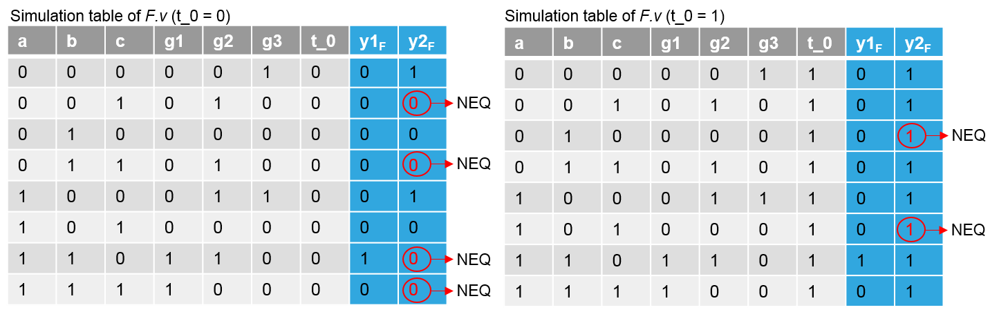
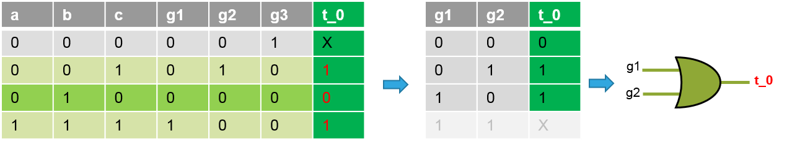

ICCAD 2017 Contest
Resource-aware Patch Generation
Chih-Jen (Jacky) Hsu, Chi-An (Rocky) Wu and Ching-Yi Huang
(Cadence Design Systems Inc., Taiwan)
0. Announcements
- FAQ updated - 2017/08/18
- Beta test result announcement - 2017/08/11
- FAQ updated - 2017/08/04
- TestCase updated - 2017/07/24
- FAQ updated - 2017/07/21
- FAQ updated - 2017/07/11
- Alpha test result announcement - 2017/07/04
- FAQ updated - 2017/06/03
- FAQ updated - 2017/05/03
- TestCase10 updated - 2017/05/02
- FAQ updated - 2017/04/25
- FAQ updated - 2017/04/21
- New Benchmarks released. - 2017/04/19
- FAQ updated - 2017/03/23
I. INTRODUCTION
With a functional Engineering Change Order (ECO) problem, the quality of patch plays an important role in the performance of the patched circuit. In this contest, contestants need to generate patch functions that will make two circuits equivalent, while minimizing the resource cost of the generated patches. Resource cost is the comprehensive physical cost of all the patches, and minimizing the resource cost implies improving patch quality (timing, power, or area). The resource cost of patches can be modeled as a weighting function with respect to several physical properties of nodes used for patches.
In this contest, we have assigned each internal node a reasonable constant weight to represent the corresponding physical cost if the node is used for generating patches. Also, the resource cost of the patches is calculated as the weight summation of patches’ support nodes. This formulation can elegantly identify wanted algorithms for the resource-aware patch generation problem.

Fig. 1. Resource-aware patch generation problem.
II. Background
In a modern design flow, if some functionality has to be changed or functional bugs are found at late stages, restarting the whole synthesis and verification flow is impractical. To save time and cost, automating Engineering Change Orders (ECOs) is more practical. As illustrated in Fig. 1, an automated ECO process can identify the differences between the old circuit $F$ and the new circuit $G$, and generate a corresponding patch function such that $F’$ (the resultant circuit after applying the patch to the old circuit $F$) and $G$ become equivalent. In addition, patch generation plays an important role in the ECO problem because the quality of patch directly influences the performance of the patched circuit.
In an industrial design flow, the functional ECO tool, e.g., Cadence Encounter Conformal ECO Designer [1], has been widely used for industrial cases for years. Although the patch size is an important metric for patch quality, patch generation must consider other physical issues, including timing and power closure, to solve the ECO problem practically.
In academic research, several studies [2-9] have proposed different kinds of algorithms to generate patches. The work has primarily focused on minimizing the patch size. The generated patches, however, may be unusable in industrial problems due to the lack of consideration of physical issues.
Recently, some research addressed the physical issues in functional ECO [10] and some searched for better base functions to generate a target function with better result [11]. In this contest, we will focus on the resource-aware patch generation problem to motivate new ideas for solving the practical ECO problem.
III. Contest Objective
The objective of this contest is to develop a flexible, scalable, and practical resource-aware patch generation algorithm that can be utilized in industry tools. In this contest, we provide benchmarks that are representatives of industrial problems to facilitate the academic research. Although existing work may not provide feasible solutions for these benchmarks, we look forward to inspiring new research into the functional ECO.
IV. Problem Formulation and Input/Output Format
Given two circuits $F$ and $G$, and the weight information of internal nodes in $F$, contestants need to utilize internal nodes in $F$ as supports, called base nodes, to generate patch functions with minimum resource cost at a specific set of target points in $F$ such that $F’$, the patched circuit, and G are equivalent, as Fig. 2 shows. The resource cost is calculated by the weight summation of the used based nodes.
Fig. 2. Problem formulation.
Program Requirement
The requested program must be run on a Linux system. The time limit of running each testcase is 1800 seconds. Parallel computation with multiple threads or processes is not allowed. The executable file should be named “rpgen” and accepts five arguments:
./rpgen <F.v> <G.v> <weight.txt> <patch.v> <out.v>
- <F.v> and <G.v> are input files that describe two circuits $F$ and $G$ in Verilog, respectively.
- <weight.txt> is an input file that describes the weight information of internal nodes in the circuit <F.v>.
- <patch.v> is an output file that describes the patch.
- <out.v> is an output file that describes the patched circuit $F’$. Note that <F.v>, <G.v>, <patch.v>, and <out.v> are all combinational circuits with no loop.
Input Format
-
<F.v> and <G.v> describe gate-level circuits in Verilog. They have only one module, named top, and contain only primitive gates without hierarchical structure. Target points are indicated by wire declaration with names t_0, t_1, …, t_n in <F.v>; target points are floating and are inputs of some gates. The format is:
module top ( <name0>, <name1>, … ); //F.v
input <name0>, <name1>, …;
output <name0>, <name1>,…;
wire <name0>, <name1> , …;
wire t_0, t_1, …; //target points
<primitive gate type> ( <name0>, <name1>, … );
<primitive gate type> ( <name0>, t_0, <name1>, … );
…
endmodule
module top ( <name0>, <name1>, … ); //G.v
input <name0>, <name1>, …;
output <name0>, <name1>,…;
wire <name0>, <name1> , …;
<primitive gate type> ( <name0>, <name1>, … );
<primitive gate type> ( <name0>, <name1>, … );
…
…
endmodule
-
<weight.txt> describes the weight information of internal nodes of <F.v> with the following format:
<name0> <weight0>
<name1> <weight1>
<name2> <weight2>
…Node name and the corresponding weight are separated by a space character, and different nodes are described in different lines. Internal nodes without assigned weights have Infinite (INF) weight.
Output Format
-
<patch.v> describes the generated patch. It is a gate-level circuit in Verilog, which has only one module, named patch, and only contain primitive gates without hierarchical structure. The format is:
module patch ( <name0>, <name1>, … );
input <name0>, <name1>, …;
output <name0>, <name1>,…;
wire <name0>, <name1> , …;
<primitive gate type> ( <name0>, <name1>, … );
<primitive gate type> ( <name0>, <name1>, … );
…
endmoduleNote that only one module can be in <patch.v>, even if there are multiple target points, in which case the patch module would have multiple output ports.
-
<out.v> describes the patched circuit $F’$. The content of <out.v> must be the same as <F.v>, except for the added patch instance. The patch must be represented as a module instance and must be added at the end of the top module (before the endmodule line), as shown in the following example:
module top ( <name0>, <name1>, … );
input <name0>, <name1>, …;
output <name0>, <name1>,…;
wire <name0>, <name1> , …;
wire t_0, t_1, …; //target points
<primitive gate type> ( <name0>, <name1>, … );
<primitive gate type> ( <name0>, t_0, <name1>, … );
…
patch p0 (t_0, t_1, …, <name0>, <name1>, …); // patch instance endmodule
In summary, we will check the following items in the output files:
- Every line in <out.v> above the patch instance must be the same as that of <F.v> before the endmodule line.
- The patch instance must be at the last line (just before the endmodule line) in <out.v>.
- <out.v> and <patch.v> must follow the format of primitive gate-level circuit in Verilog.
- There is only one module in <patch.v> and named patch.
- The circuit <out.v> with <patch.v> has to be functionally equivalent to the circuit <G.v>.
- We evaluate the resource cost based on the inputs of the patch instance in <out.v>.
- We evaluate the patch size according to the gate count in <patch.v>.
- <patch.v> and <out.v> must be combinational circuits with no loop.
V. Example
Unit Case:
| F.v | Weight.txt | G.v |
|
module top (y1, y2, a, b, c); input a, b, c; output y1, y2; wire g1, g2, g3; wire t_0; and (g1, a, b); xor (g2, a, c); nor (g3, b, c); and (y1, g1, g2); or (y2, t_0, g3); endmodule |
a 5 b 5 c 5 g1 2 g2 2 g3 1 y1 1 |
module top (y1, y2, a, b, c); input a, b, c; output y1, y2; wire g1, g2, g3, g4; not (g1, c); and (g2, a, g1); nor (g3, a, b); and (g4, b, c); and (y1, b, g2); or (y2, g2, g3, g4); endmodule |

|

|
|
Team A:
Team A uses {a, b, c} as the base nodes to generate the patch at t_0. The corresponding resource cost is 15.
| patch.v | out.v |
|
module patch (y, a, b, c); input a, b, c; output y; wire w1, w2; and (w1, a, b); xor (w2, a, c); or (y, w1, w2); endmodule |
module top (y1, y2, a, b, c); input a, b, c; output y1, y2; wire g1, g2, g3; wire t_0; and (g1, a, b); xor (g2, a, c); nor (g3, b, c); and (y1, g1, g2); or (y2, t_0, g3); patch p0 (.y(t_0), .a(a), .b(b), .c(c)); endmodule |

|
|
Team B:
Team B uses {a, b, c} as the base nodes to generate the patch at t_0. The corresponding resource cost is 15.
| patch.v | out.v |
|
module patch (y, a, b, c); input a, b, c; output y; and (w1, a, b); not (w2, a); and (w3, w2, c); or (y, w1, w3); endmodule |
module top (y1, y2, a, b, c); input a, b, c; output y1, y2; wire g1, g2, g3; wire t_0; and (g1, a, b); xor (g2, a, c); nor (g3, b, c); and (y1, g1, g2); or (y2, t_0, g3); patch p0 (.y(t_0), .a(a), .b(b), .c(c)); endmodule |

|
|
Team C:
Team C uses {g1, g2} as the base nodes to generate the patch at t_0. The corresponding resource cost is 4.
| patch.v | out.v |
|
module patch (y, a, b); input a, b; output y; or (y, a, b); endmodule |
module top (y1, y2, a, b, c); input a, b, c; output y1, y2; wire g1, g2, g3; wire t_0; and (g1, a, b); xor (g2, a, c); nor (g3, b, c); and (y1, g1, g2); or (y2, t_0, g3); patch p0 (.y(t_0), .a(g1), .b(g2)); endmodule |

|
|
Team D (non-equivalence case):
Team D uses {g1, g2} as the base nodes to generate the patch at t_0. The corresponding resource cost is 4. However, the circuit in out.v with patch patch.v is not equivalent to the circuit in G.v.
| patch.v | out.v |
|
module patch (y, a, b); input a, b; output y; and (y, a, b); endmodule |
module top (y1, y2, a, b, c); input a, b, c; output y1, y2; wire g1, g2, g3; wire t_0; and (g1, a, b); xor (g2, a, c); nor (g3, b, c); and (y1, g1, g2); or (y2, t_0, g3); patch p0 (.y(t_0), .a(g1), .b(g2)); endmodule |

|
|
VI. Evaluation Methodology
For each case, the result will be evaluated by the following criteria:
- Correctness: The program has to be finished normally. Output files must comply with the output format. The resultant circuit <out.v> with the patch <patch.v> has to be functionally equivalent to <G.v>. Any violation gets score of 0 for that testcase.
- Time limit: The program has to be finished within 1800 seconds; otherwise, the team gets score of 0 for that testcase.
-
Scoring according to the rank: The teams that pass the above correctness and time limit checking get their scores by their ranks for that testcase. The teams with the rank 1~6 will get scores of {10, 7, 5, 4, 3, 2}, respectively. The remaining teams get a score of 1. Teams are ranked based on the following criteria:
- We rank teams according to the resource cost, i.e., the total weight of used base nodes. The smaller is better.
- If the resource cost ties, we rank the teams by the patch size, i.e., the gate count in a patch. The smaller is better.
- If teams still tie, we rank them according to the runtime. The less is better.
For example in Section V, Team D gets score of 0 because the patched circuit is not equivalent to the circuit in <G.v>. Next, the resource cost of {Team A, Team B, Team C} is {15, 15, 4}, respectively, and Team C is the first since Team C has the least resource cost. However, because Team A and Team B have the same resource cost, we rank them according to the patch size. The patch size is evaluated by the gate count of a patch, so the patch sizes of Team A and Team B are 3 and 4, respectively. Thus, Team A is the second and Team B is the third. Finally, the scores of {Team A, Team B, Team C, Team D} are {7, 5, 10, 0}, accordingly.
In this contest, there will be a half of single fix problems and a half of multiple fix problems for evaluation, either public or hidden.
The team earning the highest accumulated scores for all the benchmarks wins the contest.
In the final test, just for unit1, the teams with the same result and with runtime less than 1 second get the same rank and scores because unit1 is a simple case from the problem description.
For example:
team 1: resource cost = 10, patch size = 4, time = 0.1; team 2: resource cost = 10, patch size = 4, time = 0.2.
team 3: resource cost = 15, patch size = 4, time = 0.1; team 4: resource cost = 15, patch size = 4, time = 0.2.
Both team 1 and team 2 get score of 10 (Rank 1), and both team 3 and team 4 get score of 7 (Rank 2).
VII. Problem Guidance
You can skip this part if you are familiar with ECO background or algorithms.
- You will need a simple Verilog primitive gate-level parser.
- You will need an equivalence checker to verify your result.
- Contestants can utilize, modify, or apply ideas from academic papers regarding the ECO problem and patch generation. Refer to the reference listed in Section VIII.
- To inspire contestants, we provide a baseline algorithm for single fix problems and provide a tutorial with the above example. Refer to Appendix.
VIII. Reference
- Cadence Encounter Conformal ECO Designer, https://www.cadence.com/content/cadence-www/global/en_US/home/tools/digital-design-and-signoff/functional-eco/conformal-eco-designer.html
- K.-H. Chang, I. L. Markov and V. Bertacco, "Fixing Design Errors With Counterexamples and Resynthesis," IEEE Transactions on Computer-Aided Design of Integrated Circuits and Systems (TCAD), vol. 27, no. 1, pp. 184-188, Jan. 2008.
- S.-L. Huang, W.-H. Lin, P.-K. Huang and C.-Y. Huang, "Match and replace: A functional ECO engine for multi-error circuit rectification," IEEE Transactions on Computer-Aided Design of Integrated Circuits and Systems (TCAD), vol. 32, no. 3, pp. 467-478, March 2013.
- S. Krishnaswamy, H. Ren, N. Modi and R. Puri, "DeltaSyn: An efficient logic difference optimizer for ECO synthesis," International conference on Computer-Aided Design (ICCAD) - Digest of Technical Papers, 2009, pp. 789-796.
- C.-C. Lin, K-.C. Chen and M. Marek-Sadowska, "Logic synthesis for engineering change," Design Automation Conference (DAC), 1995, pp. 647-652
- C.-H. Lin, Y.-C. Huang, S.-C. Chang and W.-B. Jone, "Design and design automation of rectification logic for engineering change," Asia and South Pacific Design Automation Conference (ASP-DAC), 2005, pp. 1006-1009.
- K.-F. Tang, C.-A. Wu, P.-K. Huang and C.-Y. Huang, "Interpolation-based incremental ECO synthesis for multi-error logic rectification," Design Automation Conference (DAC), 2011, pp. 146-151.
- K.-F. Tang, P.-K. Huang, C.-N. Chou and C.-Y. Huang, "Multi-patch generation for multi-error logic rectification by interpolation with cofactor reduction," Design, Automation & Test in Europe Conference & Exhibition (DATE), 2012, pp. 1567-1572.
- B.-H. Wu, C.-J. Yang, C.-Y. Huang and J.-H. R. Jiang, "A robust functional ECO engine by SAT proof minimization and interpolation techniques," International Conference on Computer-Aided Design (ICCAD), 2010, pp. 729-734.
- A.-C. Cheng, I. H.-R. Jiang and J.-Y. Jou, "Resource-aware functional ECO patch generation," Design, Automation & Test in Europe Conference & Exhibition (DATE), 2016, pp. 1036-1041.
- A. Petkovska, D. Novo, A. Mishchenko and P. Ienne, "Constrained interpolation for guided logic synthesis," International Conference on Computer-Aided Design (ICCAD), 2014, pp. 462-469.
IX. Testcase
- Unit1
- Unit2
- Unit3
- Unit4
- Unit5
- Unit6
- Unit7
- Unit8
- Unit9
- Unit10
- Unit11
- Unit12
- Unit13
- Unit14
- Hidden TestCases
X. Alpha Test
P.S.
Since unit1 is a simple case from the problem description, the teams with the same result and with runtime less than 1 second get the same rank and scores.
For example, team 1: resource cost = 10, patch size = 4, time = 0.1; team 2: resource cost = 10, patch size = 4, time = 0.2.
Both team 1 and team 2 get score of 10 (Rank 1).
XI. Beta Test
P.S.
Since unit1 is a simple case from the problem description, the teams with the same result and with runtime less than 1 second get the same rank and scores
XII. Appendix
Tutorial of baseline algorithm
The baseline algorithm utilizes pattern simulation and observes the simulation signatures to generate patch function. We first use the example in Section V to demonstrate the algorithm.
- First, introduce input patterns into both F.v and G.v, run simulation, and build up simulation tables of F.v with t_0 = 0, F.v with t_0 = 1, and G.v, respectively. Here we exhaustively simulate all pattern combinations and record simulation values of all nodes.


Fig. 3. Exhaustive simulation results of F.v and G.v.
Fig. 4. Simulation tables for F.v with t_0 = 0, F.v with t_0 = 1, and G.v, respectively.
- Observe the simulation values at primary outputs. As shown in Fig. 4, we can find that y1 between F.v and G.v are equivalent but y2 are not equivalent under some patterns.
-
Observe the values at y2 and t_0 in tables. As shown in Fig. 5, when observing the table of F.v with t_0 = 0, we can find that the values of t_0 should be changed to 1 under the patterns $S_{on} = \{(a, b, c) = (0, 0, 1), (0, 1, 1), (1, 1, 0), (1, 1, 1)\}$ to fix the output value of y2 for equivalence (you can use simulation again to verify this). On the other hand, when observing the table with t_0 = 1, we can find that the values of t_0 should be changed to 0 under the patterns $S_{off} = \{(0, 1, 0), (1, 0, 1)\}$ for equivalence. Note that we must check that $S_{on}$ and $S_{off}$ should not have intersection, i.e., conflicts. If the intersection is not empty, it means that you cannot generate patch at the target point with these patterns. Finally, t_0 is don’t care under patterns $S_{dc} = \{(0, 0, 0), (1, 0, 0)\}$ since y2 of F.v is equivalent to y2 of G.v no matter what value t_0 is under these patterns.
Fig. 5. Figure out Son, Soff, and Sdc for t_0.
- Integrate the information acquired from step (c) and build up a new simulation table Table I for new behavior of t_0, as shown in Fig. 6. Now we can synthesize a patch circuit according to Table I.
Fig. 6. Table I.
-
Here we choose g1 and g2 as the base nodes, so the table can be transformed to Table II, as shown in Fig. 7. Note that we must check whether there are conflicts on the values of t_0. If conflict exists, you should try other base node combination.
Fig. 7. Table II.
-
Finally, we synthesize Table II and obtain the patch t_0 = g1 OR g2, as shown in Fig. 8.
Fig. 8. Synthesize the patch t_0 = g1 OR g2 according to Table II.
-
Considering practicability, we can use random patterns instead of exhaustive patterns to generate patch. After simulation, in the synthesis phase, we only consider existing pattern combination, and view the others as don’t cares. For the example shown in Fig. 9, we can still obtain the same patch as that generated at step (f), i.e., t_0 = g1 OR g2. Since the random patterns may not be complete enough for a right patch, you must check the equivalence after patching. If not equivalent, consider more patterns.
Fig. 9. The example with random simulation.
Algorithm
| Algorithm: Patch_Generation_Single_Fix(F, G) |
//Assume there is only one target point t_0
01: Simulate input patterns for circuits {F(t_0 = 0), F(t_0 = 1), G};// exhaustive or random; step (a)
02: Build up the simulation tables {T(F, t_0 = 0), T(F, t_0 = 1), TG} for {F(t_0 = 0), F(t_0 = 1), G}, respectively;// step (a)
03: Observe output values in {T(F, t_0 = 0), T(F, t_0 = 1), TG} and mark the NEQ bits in {T(F, t_0 = 0), T(F, t_0 = 1)}; // step (b)
04: Generate {Son, Soff, Sdc} for t_0;// step (c)
// by flipping t_0 values at NEQ bits in {T(F, t_0 = 0), T(F, t_0 = 1)} and validating through re-simulation
// Son: the pattern set where t_0 should be 1 for EQ
// Soff: the pattern set where t_0 should be 0 for EQ
// Sdc: the pattern set where t_0 can be either 1 or 0
05: if Son ∩ Soff is ∅ do
06: Build up simulation table Tnew_t_0 for new behavior of t_0 based on {Son, Soff, Sdc};// step (d)
07: repeat
08: Choose base nodes B;// your method
09: Transform table Tnew_t_0 to Tbase_node based on B;// step (e)
10: if Tbase_node has conflict do
11: continue;
12: end if
13: Synthesize patch R based on Tbase_node;// your method; step (f)
14: break;
15: end repeat
16: return R;
17: end if
18: return Fail.
|
XIII. FAQ
To clarify the program requirement and restriction regarding submitted files and multiple processes, we have modified the corresponding description in Section IV.
Here is the detailed explanation:
1. You must submit an executable file called ‘rpgen’, and we will run it with required arguments to evaluate your results.
2. Using open source tools is allowed. If your program needs to call other executable files, we strongly recommend contestants to embed the open source codes into
your program and submit only one file rpgen. Otherwise, please make sure your program can link and execute other files/executable files correctly in our environment.
3. For the sake of fairness, parallel computation with multiple threads or processes is not allowed. Using multiple processes without parallel computation is allowed.
4. If you want to check whether you set up your submitted file correctly in our environment, please remember to submit your program in Alpha and Beta tests.
- Would you give another test case which has more target points?
Sure. More testcases, including the cases with multiple target points, will be released in mid-April. We also encourage contestants to create your own testcases for enhancing the algorithms. -
Does the below requirement mean that we can use any open source equivalence check tools(likeabc)? 1. You will need an equivalence checker to verify your result.
Yes, you can use any open source equivalence checking tool to help you. If your program needs to call the open source equivalence checker, please embed the checker into your source codes and make sure your program can be built correctly in our environment. Please note that you can only submit “one” executable file named “rpgen”. We strongly recommend contestants to embed the open source codes into your program and submit only one file rpgen if your program needs to call the open source equivalence checker. Otherwise, please make sure your program can correctly link and execute other files/executable files in our environment. -
Is it allowed to use multiple processes without actual parallel computations? It's very useful to limit execution time of algorithm parts or equivalence checker. I used this technique in 2015 CAD Contest, but want to clarify it again.
Yes, you can use multiple processes without actual parallel computations. However, please note that parallel computation is not allowed. We have modified the description of Program Requirement and added explanation in FAQ to clarify the corresponding requirement. -
Which maximal number of inputs can have one gate in patch? Maybe we can extremely reduce patch size by using gates with hundreds of inputs instead of two-input gates.
The maximal number of inputs of a gate is 32768. - We have a question about opensource tools that we may use in our flow. We are going to make a binary executable “rpgen” and some directory with free CAD tools (abc, Yosys, misII, Espresso, …). Is it allowed to do so? Nowhere in problem statement, we can’t find that there should be only one executable, and from our point of view it is the common practice in CAD development to use large toolchain in conjunction with own dataflow. We need these tools and embedding all of them in our source code will consume much time. It's better to concentrate on actual task, rather than spend time on technical implementation. Thanks for your suggestion. Yes, you can submit other executable files. Please make sure your program rpgen can correctly link and run other executable files in our environment. Moreover, you can use multiple processes but please note that parallel computation is not allowed. We have modified the description of Program Requirement and added explanation in FAQ to clarify the corresponding requirement.
-
I have difficulties with parsing netlist F.v in test case "Unit10". ABC don't read this netlist too. I found that some nets in F.v not declared, namely fanouts of first gates buf ( g349 , g0 ); , … , buf ( g357 , g8 ); Also this test contains a lot of non-driven nets. Here ABC output: "abc 01> read unit10/F.v
Warning: Constant-0 drivers added to 120 non-driven nets in network "top":
n180, n181, n182, n183 ..."
Thanks for the response. The fixed Unit10 has been uploaded. Please check it. About the non-driven nets, contestants should only take care of the nets named t_0, t_1, t_2, … , i.e., target points. Other non-driven nets should be just declared but not used (do not drive any gate). -
Which directories are available for writing temporary files? Can I write to current process directory?
Yes, you can write temporary files to current process directory. -
I have a request regarding the installed development tools on the servers. Is it possible to install the followings: (1) readline library (2) devtoolset 6.1 (or 6)
(1) readline library has been installed.
(2) devtoolset 6 has been installed. To use it, you must use command "scl enable devtoolset-6 tcsh” (just for current terminal). Please make sure your program can correctly run on the test machine. Thus, we strongly recommend you to submit your program in Alpha/Beta tests. -
Could you install next programs and packages? (1) gcc 4.9+ (preferably 5.2+) (2) screen or tmux
(1) Basically, we provide gcc/g++ with version 4.8.2 by default. If you need newer gcc/g++, please refer to the previous FAQ (devtoolset 6). Please make sure your program can correctly run on the test machine. Thus, we strongly recommend you to submit your program in Alpha/Beta tests.
(2) Screen has been installed. -
For the input files in this problem, do we have to deal with comments? Besides, in the input files, what kind of gate would we have to deal with? We have considered And, Nand, Or, Nor, Xor, Xnor, Not, Buffer. Would there be any other type?
No, you do not have to deal with comments. If there exists any comment in the testcases, please tell us. Also, the primitive gates include {and, nand, or, nor, xor, xnor, not, buf}. -
I found that some gates are not listed in weight.txt. For example : target points are not listed in weight.txt
Is the following statement always true? " If a gate has no weight, then every fanout gates of the gate has no weight. "
The statement is not true. There is no guarantee for such weight distribution. Also, please note that target points may be listed in weight.txt for some testcases. -
I'm writing to inquire more details about the output format. Is the negative sign "!" ok to use? For example, and( !a, !b ). We use negative signs only in patch.v, out.v will be the same as the input F.v. Or should we transfer the circuit to contain no negative signs?
“!” is one of the operators which need further “elaboration”, where the elaboration is ambiguous according to the “gate-count, connection …. “. We can say “!” for single bit is 3 concatenated invertors, or other odd concatenated invertors. So we do not allow the operator here or any construct which needs “elaboration” or “interpretation”. By the way, “!” is the logical not operator, and “~” is the bitwise not operator. They are different. -
We have two questions listed below.
1. Use constant to fix target points
We found that in some multi-target cases it is possible to use a constant to fix a certain target point. In the patch.v file, can we write for example "assign t_3 = 1'b1;" to represent we insert constant-1 for t_3? Otherwise, we would need to create constant-1 by adding a dummy OR-gate.
2. Is there any penalty for timeout?
We developed several algorithms and execute fast one first and then switch to high-effort ones. If the high-effort ones timeout, the patch generated by the fast one would have runtime equals 1800 sec. Besides that, is there any other penalty for the patch? If it outperforms others in weight or size, will it still gain full scores?
1. No, themust only contain primitive gates. You can use buf (t_3, 1’b1) to represent the constant. Besides, this does not affect the calculation of resource cost, which is the highest priority to rank teams.
2. Although we said that your program has to be finished within 1800 seconds, we actually mean that your program has to generate the results within 1800 seconds. Therefore, if your program indeed generates the output files that can be evaluated, but your program also times out, we will still evaluate the results of the generated files and rank your team accordingly (the runtime is 1800 seconds). For your example, if your patch generated by the fat one outperforms others in resource cost, you will get the full score. However, if the resource cost and patch size of teams tie, we rank the teams according to the runtime, and your runtime is 1800 seconds.